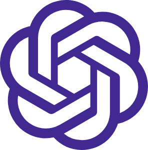
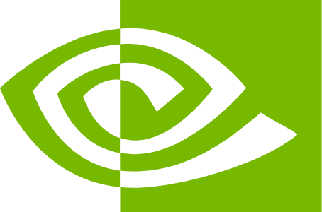

<!doctype html>
<meta charset="utf-8">
<title>10/9 썸네일 v2</title>
<!-- 1280×720 썸네일 두 장. render_v2.js 가 section.thumb 를 PNG 로 찍는다.
     A: 위(빨강) "107조 벌었는데" ↔ 아래(파랑) "주가 −2.4%" 대비 · B: 폭락 차트 위 "−3.4%" + 원인 로고 -->
<style>
:root{--red:#ff2e4d;--red2:#b5102c;--blue:#2f7bff;--navy:#07142f;--yel:#ffd43b;--ink:#fff;font-family:'Noto Sans CJK KR',sans-serif}
*{box-sizing:border-box;margin:0}
body{background:#000}
.thumb{width:1280px;height:720px;position:relative;overflow:hidden;margin-bottom:10px}
.t{position:absolute;font-weight:900;color:var(--ink);line-height:1;letter-spacing:-.03em;
   -webkit-text-stroke:14px #0a0a0f;paint-order:stroke fill;filter:drop-shadow(0 10px 18px rgba(0,0,0,.55))}
.person{position:absolute;filter:drop-shadow(0 0 0 #fff) drop-shadow(5px 0 0 #fff) drop-shadow(-5px 0 0 #fff) drop-shadow(0 5px 0 #fff) drop-shadow(0 -5px 0 #fff) drop-shadow(0 20px 30px rgba(0,0,0,.6))}
.sticker{position:absolute;background:var(--yel);color:#111;font-weight:900;padding:10px 26px;border-radius:14px;
   box-shadow:0 8px 0 #0a0a0f,0 14px 24px rgba(0,0,0,.4);border:5px solid #0a0a0f}
.logo{position:absolute}

/* A */
#A .top{position:absolute;inset:0;background:linear-gradient(135deg,#ff4d63,var(--red) 40%,var(--red2));clip-path:polygon(0 0,100% 0,100% 44%,0 58%)}
#A .bot{position:absolute;inset:0;background:radial-gradient(900px 500px at 20% 100%,#1f5cff,var(--navy) 70%);clip-path:polygon(0 58%,100% 44%,100% 100%,0 100%)}
#A .seam{position:absolute;left:-20px;right:-20px;top:0;height:720px;background:#fff;clip-path:polygon(0 57.2%,100% 43.2%,100% 44.8%,0 58.8%)}
#A .arrow{position:absolute;left:520px;top:400px;width:220px;height:300px;opacity:.22}
/* B */
#B{background:radial-gradient(800px 600px at 30% 20%,#13254f,#05070d 70%)}
#B canvas{position:absolute;inset:0}
</style>

<section class="thumb" id="A">
  <div class="top"></div><div class="bot"></div><div class="seam"></div>
  <svg class="arrow" viewBox="0 0 220 300"><path d="M70 0h80v190h70L110 300 0 190h70z" fill="#fff"/></svg>
  
  <div class="t" style="left:40px;top:112px;font-size:190px">107조</div>
  <div class="sticker" style="left:500px;top:186px;font-size:48px;transform:rotate(-6deg)">벌었는데</div>
  <div class="t" style="left:40px;top:440px;font-size:92px">주가는</div>
  <div class="t" style="left:30px;top:540px;font-size:150px;color:#cfe0ff">−2.4%</div>
  
  <div class="sticker" style="right:40px;top:30px;font-size:40px;transform:rotate(4deg);background:#fff">사상 최대인데 왜?</div>
</section>

<section class="thumb" id="B">
  <canvas id="cv" width="1280" height="720"></canvas>
  
  <div class="sticker" style="left:40px;top:38px;font-size:44px;transform:rotate(-4deg);display:flex;align-items:center;gap:16px">
    OpenAI 숫자 하나에</div>
  <div class="t" style="left:30px;top:170px;font-size:110px">반도체</div>
  <div class="t" style="left:24px;top:300px;font-size:230px;color:#5aa0ff">−3.4%</div>
  <div style="position:absolute;left:44px;top:560px;display:flex;gap:16px">
    <div class="sticker" style="position:static;background:#fff;font-size:40px;display:flex;align-items:center;gap:12px">엔비디아 −2.9%</div>
    <div class="sticker" style="position:static;background:#fff;font-size:40px">마이크론 −4.8%</div>
  </div>
</section>

<script>
// B 배경: 격자 + 위에서 아래로 꺾여 떨어지는 굵은 파란 차트 (장식)
const c=document.getElementById('cv').getContext('2d');
c.strokeStyle='rgba(90,160,255,.10)';c.lineWidth=2;
for(let x=0;x<1280;x+=64){c.beginPath();c.moveTo(x,0);c.lineTo(x,720);c.stroke()}
for(let y=0;y<720;y+=64){c.beginPath();c.moveTo(0,y);c.lineTo(1280,y);c.stroke()}
const p=[[0,250],[90,220],[170,240],[250,190],[330,215],[420,170],[500,200],[560,185],[640,330],[700,300],[780,470],[850,440],[940,640],[1000,610],[1100,760]];
const g=c.createLinearGradient(0,0,1280,720);g.addColorStop(0,'rgba(90,160,255,.35)');g.addColorStop(1,'rgba(90,160,255,.95)');
c.shadowColor='#2f7bff';c.shadowBlur=40;c.strokeStyle=g;c.lineWidth=22;c.lineJoin='round';c.lineCap='round';
c.beginPath();p.forEach(([x,y],i)=>i?c.lineTo(x,y):c.moveTo(x,y));c.stroke();
c.shadowBlur=0;c.fillStyle='rgba(47,123,255,.12)';c.beginPath();c.moveTo(0,720);p.forEach(([x,y])=>c.lineTo(x,y));c.lineTo(1280,720);c.fill();
</script>
